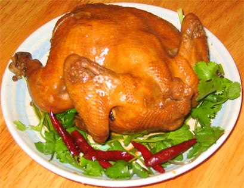

绿色果蔬
MORE>
鸡肉
鸡肉指鸡身上的肉，鸡的肉质细嫩，滋味鲜美，适合多种烹调方法，并富有营养，有滋补养身的作用。鸡肉不但适于热炒、炖汤，而且是比较适合冷食凉拌的肉类

1
基本介绍
顾名思义，鸡肉就是鸡身上的肉，鸡的肉质细嫩，滋味鲜美，适合多种烹调方法，并富有营养，有滋补养身的作用。鸡肉不但适于热炒、炖汤，而且是比较适合冷食凉拌的肉类。但切忌吃过多的鸡翅等鸡肉类食品，以免引起肥胖。鸡肉的蛋白质的含量颇多，在肉之中，可以说是蛋白质最高的肉类之一，是属于高蛋白低脂肪的食品。 鸡肉蛋白质的含量比例较高，种类多，而且消化率高，很容易被人体吸收利用，有增强体力、强壮身体的作用。鸡肉含有对人体生长发育有重要作用的磷脂类，是中国人膳食结构中脂肪和磷脂的重要来源之一。鸡肉对营养不良、畏寒怕冷、乏力疲劳、月经不调、贫血、虚弱等有很好的食疗作用。祖国医学认为，鸡肉有温中益气、补虚填精、健脾胃、活血脉、强筋骨的功效。 芡实
2
主要功效
鸡肉性平、温、味甘，入脾、胃经；可益气，补精，添髓；用于虚劳瘦弱、中虚食少、泄泻头晕心悸、月经不调、产后乳少、消渴、水肿、小便数频、遗精、耳聋耳鸣等。
1.强身健体
鸡肉的消化率高，很容易被人体吸收利用，有增强体力、强壮身体的作用。
2.提高免疫力
现代社会中天天忙忙碌碌，常处于亚健康状态的白领最好多吃一些，以增强免疫力，减少患病几率。鸡肉具有温中益气、补精填髓、益五脏、补虚损的功效，用于治疗虚劳瘦弱、中虚食少、泄泻头晕心悸、月经不调、产后乳少、消渴、水肿等症状。
3.补肾精
可缓解由于肾精不足所导致的小便频繁、耳聋、精少精冷等症状。
4.促进智力发育
具有抗氧化和一定的解毒作用。在改善心脑功能、促进儿童智力发育方面，更是有较好的作用。
3
营养价值
1.鸡肉和猪肉、牛肉比较，其蛋白质含量较高，脂肪含量较低。此外，鸡肉蛋白质中富含人体必须的氨基酸，其含量与蛋乳中的氨基酸谱式极为相似，因此为优质蛋白质的来源。鸡肉的蛋白质含量根据部位、带皮和不带皮而有差别，从高到底的排序大致为去皮的鸡肉、胸脯肉、大腿肉。鸡肉皮存在大量的脂类物质，所以绝不能把带皮的鸡肉视为低热量的食品。
2.鸡肉也是磷、铁、铜和锌的良好来源，并且富含丰富的维生素B12、维生素B6、维生素A、维生素D和维生素K等。
3.鸡肉的脂类物质和牛肉、猪肉比较，含有较多的不饱和脂肪酸——亚油酸和亚麻酸，能够降低人体对健康不利的低密度脂蛋白胆固醇的含量。
4
食用指南
1.鸡屁股是淋巴最为集中的地方，也是储存病菌，病毒和致癌物的仓库，应弃掉不要。
2.鸡的肉质内含有谷氨酸钠，可以说是“自带味精”。烹调鲜鸡时只需放油、精盐、葱、姜、酱油等，味道就很鲜美。如果再放入花椒、大料等厚味的调料，反而会把鸡的鲜味驱走或掩盖。但买回的冻光鸡由于没有开膛，常有一股恶味儿，做时可以适当放些花椒、大料，有助于驱除恶味儿。
3.鸡肉用药膳炖煮，营养更全面。带皮的鸡肉含有较多的脂类物质，所以比较肥的鸡应该去掉鸡皮再烹制。